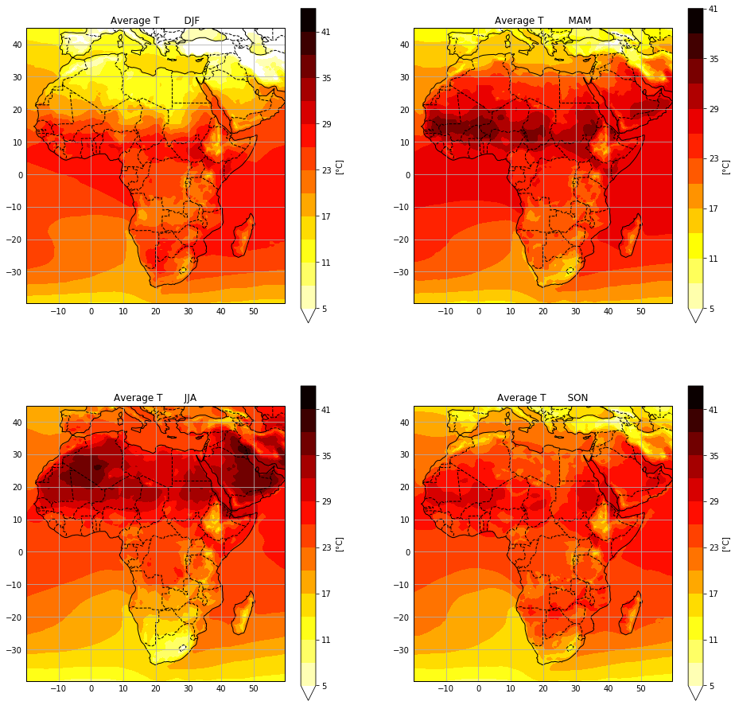

---
redirect_from:
  - "04-06-summary"
interact_link: content/D:\Users\Marie\Dokumente\01_UNI\Master\Wissenschaftliche_Mitarbeit_Fabien\chapter01\content\04_06_Summary.ipynb
kernel_name: python3
has_widgets: false
title: |-
  Summary
prev_page:
  url: /04_05_Controlon2D.html
  title: |-
    Control on 2D Plots
next_page:
  url: /05_PlotWindData.html
  title: |-
    Plotting Wind Data
comment: "***PROGRAMMATICALLY GENERATED, DO NOT EDIT. SEE ORIGINAL FILES IN /content***"
---
<main class="jupyter-page">

<div class="jb_cell">

<div class="cell border-box-sizing text_cell rendered"><div class="inner_cell">
<div class="text_cell_render border-box-sizing rendered_html">
<h2 id="4.6-Summary">4.6 Summary<a class="anchor-link" href="#4.6-Summary"> </a></h2>
</div>
</div>
</div>
</div>

<div class="jb_cell">

<div class="cell border-box-sizing text_cell rendered"><div class="inner_cell">
<div class="text_cell_render border-box-sizing rendered_html">
<p>To summarize what we learned in this and the last chapter, we will now produce a plot with four subplots for the seasonal temperature averages over the african continent in a PlateCarree Projection in the form of a contourf plot.</p>
<p>We start with selecting africa, grouping by month and averaging over the seasons:</p>

</div>
</div>
</div>
</div>

<div class="jb_cell">

<div class="cell border-box-sizing code_cell rendered">
<div class="input">

<div class="inner_cell">
    <div class="input_area">
<div class=" highlight hl-ipython3"><pre><span></span><span class="n">africa</span> <span class="o">=</span> <span class="n">ds</span><span class="o">.</span><span class="n">t2m</span><span class="o">.</span><span class="n">sel</span><span class="p">(</span><span class="n">latitude</span> <span class="o">=</span> <span class="nb">slice</span><span class="p">(</span><span class="mi">45</span><span class="p">,</span> <span class="o">-</span><span class="mi">40</span><span class="p">),</span> <span class="n">longitude</span> <span class="o">=</span> <span class="nb">slice</span><span class="p">(</span><span class="o">-</span><span class="mi">20</span><span class="p">,</span><span class="mi">60</span><span class="p">))</span>
<span class="n">temp_month</span><span class="o">=</span><span class="n">africa</span><span class="o">.</span><span class="n">groupby</span><span class="p">(</span><span class="s1">&#39;time.month&#39;</span><span class="p">)</span><span class="o">.</span><span class="n">mean</span><span class="p">(</span><span class="n">dim</span><span class="o">=</span><span class="s1">&#39;time&#39;</span><span class="p">)</span><span class="o">-</span><span class="mf">273.15</span>
<span class="n">temp_djf</span><span class="o">=</span><span class="n">temp_month</span><span class="o">.</span><span class="n">sel</span><span class="p">(</span><span class="n">month</span><span class="o">=</span><span class="p">[</span><span class="mi">1</span><span class="p">,</span> <span class="mi">2</span><span class="p">,</span> <span class="mi">12</span><span class="p">])</span><span class="o">.</span><span class="n">mean</span><span class="p">(</span><span class="n">dim</span><span class="o">=</span><span class="s1">&#39;month&#39;</span><span class="p">)</span>
<span class="n">temp_mam</span><span class="o">=</span><span class="n">temp_month</span><span class="o">.</span><span class="n">sel</span><span class="p">(</span><span class="n">month</span><span class="o">=</span><span class="p">[</span><span class="mi">3</span><span class="p">,</span> <span class="mi">4</span><span class="p">,</span> <span class="mi">5</span><span class="p">])</span><span class="o">.</span><span class="n">mean</span><span class="p">(</span><span class="n">dim</span><span class="o">=</span><span class="s1">&#39;month&#39;</span><span class="p">)</span>
<span class="n">temp_jja</span><span class="o">=</span><span class="n">temp_month</span><span class="o">.</span><span class="n">sel</span><span class="p">(</span><span class="n">month</span><span class="o">=</span><span class="p">[</span><span class="mi">6</span><span class="p">,</span> <span class="mi">7</span><span class="p">,</span> <span class="mi">8</span><span class="p">])</span><span class="o">.</span><span class="n">mean</span><span class="p">(</span><span class="n">dim</span><span class="o">=</span><span class="s1">&#39;month&#39;</span><span class="p">)</span>
<span class="n">temp_son</span><span class="o">=</span><span class="n">temp_month</span><span class="o">.</span><span class="n">sel</span><span class="p">(</span><span class="n">month</span><span class="o">=</span><span class="p">[</span><span class="mi">9</span><span class="p">,</span> <span class="mi">10</span><span class="p">,</span> <span class="mi">11</span><span class="p">])</span><span class="o">.</span><span class="n">mean</span><span class="p">(</span><span class="n">dim</span><span class="o">=</span><span class="s1">&#39;month&#39;</span><span class="p">)</span>
</pre></div>

</div>
</div>
</div>

</div>
</div>

<div class="jb_cell">

<div class="cell border-box-sizing text_cell rendered"><div class="inner_cell">
<div class="text_cell_render border-box-sizing rendered_html">
<p>Now produce the plot:</p>

</div>
</div>
</div>
</div>

<div class="jb_cell">

<div class="cell border-box-sizing code_cell rendered">
<div class="input">

<div class="inner_cell">
    <div class="input_area">
<div class=" highlight hl-ipython3"><pre><span></span><span class="n">figur</span> <span class="o">=</span> <span class="n">plt</span><span class="o">.</span><span class="n">figure</span><span class="p">(</span><span class="n">figsize</span><span class="o">=</span><span class="p">(</span><span class="mi">16</span><span class="p">,</span> <span class="mi">16</span><span class="p">))</span> <span class="c1">#define a figure of a certain size</span>
<span class="n">ax</span> <span class="o">=</span> <span class="n">plt</span><span class="o">.</span><span class="n">subplot</span><span class="p">(</span><span class="mi">2</span><span class="p">,</span> <span class="mi">2</span><span class="p">,</span> <span class="mi">1</span><span class="p">,</span> <span class="n">projection</span><span class="o">=</span><span class="n">ccrs</span><span class="o">.</span><span class="n">PlateCarree</span><span class="p">())</span> <span class="c1">#first subplot</span>
<span class="n">temp_djf</span><span class="o">.</span><span class="n">plot</span><span class="o">.</span><span class="n">contourf</span><span class="p">(</span><span class="n">ax</span><span class="o">=</span><span class="n">ax</span><span class="p">,</span> <span class="n">transform</span><span class="o">=</span><span class="n">ccrs</span><span class="o">.</span><span class="n">PlateCarree</span><span class="p">(),</span><span class="n">levels</span><span class="o">=</span><span class="n">np</span><span class="o">.</span><span class="n">arange</span><span class="p">(</span><span class="mi">5</span><span class="p">,</span> <span class="mi">45</span><span class="p">,</span> <span class="mi">3</span><span class="p">),</span> <span class="n">cmap</span><span class="o">=</span><span class="s1">&#39;hot_r&#39;</span><span class="p">,</span> <span class="n">cbar_kwargs</span><span class="o">=</span><span class="p">{</span><span class="s1">&#39;label&#39;</span><span class="p">:</span><span class="s1">&#39;[°C]&#39;</span><span class="p">})</span>
<span class="c1"># the actual plot with levels, a colormap and a labeled colorbar</span>
<span class="n">ax</span><span class="o">.</span><span class="n">coastlines</span><span class="p">();</span> <span class="c1">#add coastlines</span>
<span class="n">xl</span> <span class="o">=</span> <span class="n">ax</span><span class="o">.</span><span class="n">gridlines</span><span class="p">(</span><span class="n">draw_labels</span><span class="o">=</span><span class="kc">True</span><span class="p">);</span> <span class="c1">#add gridlines with labels</span>
<span class="n">xl</span><span class="o">.</span><span class="n">xlabels_top</span> <span class="o">=</span> <span class="kc">False</span> <span class="c1"># no labels at the top</span>
<span class="n">xl</span><span class="o">.</span><span class="n">ylabels_right</span> <span class="o">=</span> <span class="kc">False</span> <span class="c1"># no labels on the right side</span>
<span class="n">ax</span><span class="o">.</span><span class="n">add_feature</span><span class="p">(</span><span class="n">cartopy</span><span class="o">.</span><span class="n">feature</span><span class="o">.</span><span class="n">BORDERS</span><span class="p">,</span> <span class="n">linestyle</span><span class="o">=</span><span class="s1">&#39;--&#39;</span><span class="p">);</span> <span class="c1"># add dashed country borders</span>
<span class="n">ax</span><span class="o">.</span><span class="n">set_title</span><span class="p">(</span><span class="s1">&#39;Average T        DJF&#39;</span><span class="p">);</span> <span class="c1"># add a title</span>

<span class="n">ax</span> <span class="o">=</span> <span class="n">plt</span><span class="o">.</span><span class="n">subplot</span><span class="p">(</span><span class="mi">2</span><span class="p">,</span> <span class="mi">2</span><span class="p">,</span> <span class="mi">2</span><span class="p">,</span> <span class="n">projection</span><span class="o">=</span><span class="n">ccrs</span><span class="o">.</span><span class="n">PlateCarree</span><span class="p">())</span>
<span class="n">temp_mam</span><span class="o">.</span><span class="n">plot</span><span class="o">.</span><span class="n">contourf</span><span class="p">(</span><span class="n">ax</span><span class="o">=</span><span class="n">ax</span><span class="p">,</span> <span class="n">transform</span><span class="o">=</span><span class="n">ccrs</span><span class="o">.</span><span class="n">PlateCarree</span><span class="p">(),</span><span class="n">levels</span><span class="o">=</span><span class="n">np</span><span class="o">.</span><span class="n">arange</span><span class="p">(</span><span class="mi">5</span><span class="p">,</span> <span class="mi">43</span><span class="p">,</span> <span class="mi">3</span><span class="p">),</span> <span class="n">cmap</span><span class="o">=</span><span class="s1">&#39;hot_r&#39;</span><span class="p">,</span> <span class="n">cbar_kwargs</span><span class="o">=</span><span class="p">{</span><span class="s1">&#39;label&#39;</span><span class="p">:</span><span class="s1">&#39;[°C]&#39;</span><span class="p">})</span>
<span class="n">ax</span><span class="o">.</span><span class="n">coastlines</span><span class="p">();</span>
<span class="n">xl</span> <span class="o">=</span> <span class="n">ax</span><span class="o">.</span><span class="n">gridlines</span><span class="p">(</span><span class="n">draw_labels</span><span class="o">=</span><span class="kc">True</span><span class="p">);</span>
<span class="n">xl</span><span class="o">.</span><span class="n">xlabels_top</span> <span class="o">=</span> <span class="kc">False</span>
<span class="n">xl</span><span class="o">.</span><span class="n">ylabels_right</span> <span class="o">=</span> <span class="kc">False</span>
<span class="n">ax</span><span class="o">.</span><span class="n">add_feature</span><span class="p">(</span><span class="n">cartopy</span><span class="o">.</span><span class="n">feature</span><span class="o">.</span><span class="n">BORDERS</span><span class="p">,</span> <span class="n">linestyle</span><span class="o">=</span><span class="s1">&#39;--&#39;</span><span class="p">);</span>
<span class="n">ax</span><span class="o">.</span><span class="n">set_title</span><span class="p">(</span><span class="s1">&#39;Average T        MAM&#39;</span><span class="p">);</span>

<span class="n">ax</span> <span class="o">=</span> <span class="n">plt</span><span class="o">.</span><span class="n">subplot</span><span class="p">(</span><span class="mi">2</span><span class="p">,</span> <span class="mi">2</span><span class="p">,</span> <span class="mi">3</span><span class="p">,</span> <span class="n">projection</span><span class="o">=</span><span class="n">ccrs</span><span class="o">.</span><span class="n">PlateCarree</span><span class="p">())</span>
<span class="n">temp_jja</span><span class="o">.</span><span class="n">plot</span><span class="o">.</span><span class="n">contourf</span><span class="p">(</span><span class="n">ax</span><span class="o">=</span><span class="n">ax</span><span class="p">,</span> <span class="n">transform</span><span class="o">=</span><span class="n">ccrs</span><span class="o">.</span><span class="n">PlateCarree</span><span class="p">(),</span><span class="n">levels</span><span class="o">=</span><span class="n">np</span><span class="o">.</span><span class="n">arange</span><span class="p">(</span><span class="mi">5</span><span class="p">,</span> <span class="mi">45</span><span class="p">,</span> <span class="mi">3</span><span class="p">),</span> <span class="n">cmap</span><span class="o">=</span><span class="s1">&#39;hot_r&#39;</span><span class="p">,</span> <span class="n">cbar_kwargs</span><span class="o">=</span><span class="p">{</span><span class="s1">&#39;label&#39;</span><span class="p">:</span><span class="s1">&#39;[°C]&#39;</span><span class="p">})</span>
<span class="n">ax</span><span class="o">.</span><span class="n">coastlines</span><span class="p">();</span>
<span class="n">xl</span> <span class="o">=</span> <span class="n">ax</span><span class="o">.</span><span class="n">gridlines</span><span class="p">(</span><span class="n">draw_labels</span><span class="o">=</span><span class="kc">True</span><span class="p">);</span>
<span class="n">xl</span><span class="o">.</span><span class="n">xlabels_top</span> <span class="o">=</span> <span class="kc">False</span>
<span class="n">xl</span><span class="o">.</span><span class="n">ylabels_right</span> <span class="o">=</span> <span class="kc">False</span>
<span class="n">ax</span><span class="o">.</span><span class="n">add_feature</span><span class="p">(</span><span class="n">cartopy</span><span class="o">.</span><span class="n">feature</span><span class="o">.</span><span class="n">BORDERS</span><span class="p">,</span> <span class="n">linestyle</span><span class="o">=</span><span class="s1">&#39;--&#39;</span><span class="p">);</span>
<span class="n">ax</span><span class="o">.</span><span class="n">set_title</span><span class="p">(</span><span class="s1">&#39;Average T       JJA&#39;</span><span class="p">);</span>
                   
<span class="n">ax</span> <span class="o">=</span> <span class="n">plt</span><span class="o">.</span><span class="n">subplot</span><span class="p">(</span><span class="mi">2</span><span class="p">,</span> <span class="mi">2</span><span class="p">,</span> <span class="mi">4</span><span class="p">,</span> <span class="n">projection</span><span class="o">=</span><span class="n">ccrs</span><span class="o">.</span><span class="n">PlateCarree</span><span class="p">())</span>
<span class="n">temp_son</span><span class="o">.</span><span class="n">plot</span><span class="o">.</span><span class="n">contourf</span><span class="p">(</span><span class="n">ax</span><span class="o">=</span><span class="n">ax</span><span class="p">,</span> <span class="n">transform</span><span class="o">=</span><span class="n">ccrs</span><span class="o">.</span><span class="n">PlateCarree</span><span class="p">(),</span><span class="n">levels</span><span class="o">=</span><span class="n">np</span><span class="o">.</span><span class="n">arange</span><span class="p">(</span><span class="mi">5</span><span class="p">,</span> <span class="mi">45</span><span class="p">,</span> <span class="mi">3</span><span class="p">),</span> <span class="n">cmap</span><span class="o">=</span><span class="s1">&#39;hot_r&#39;</span><span class="p">,</span> <span class="n">cbar_kwargs</span><span class="o">=</span><span class="p">{</span><span class="s1">&#39;label&#39;</span><span class="p">:</span><span class="s1">&#39;[°C]&#39;</span><span class="p">})</span>
<span class="n">ax</span><span class="o">.</span><span class="n">coastlines</span><span class="p">();</span>
<span class="n">xl</span> <span class="o">=</span> <span class="n">ax</span><span class="o">.</span><span class="n">gridlines</span><span class="p">(</span><span class="n">draw_labels</span><span class="o">=</span><span class="kc">True</span><span class="p">);</span>
<span class="n">xl</span><span class="o">.</span><span class="n">xlabels_top</span> <span class="o">=</span> <span class="kc">False</span>
<span class="n">xl</span><span class="o">.</span><span class="n">ylabels_right</span> <span class="o">=</span> <span class="kc">False</span>
<span class="n">ax</span><span class="o">.</span><span class="n">add_feature</span><span class="p">(</span><span class="n">cartopy</span><span class="o">.</span><span class="n">feature</span><span class="o">.</span><span class="n">BORDERS</span><span class="p">,</span> <span class="n">linestyle</span><span class="o">=</span><span class="s1">&#39;--&#39;</span><span class="p">);</span>
<span class="n">ax</span><span class="o">.</span><span class="n">set_title</span><span class="p">(</span><span class="s1">&#39;Average T       SON&#39;</span><span class="p">);</span>
</pre></div>

</div>
</div>
</div>

<div class="output_wrapper">
<div class="output">

<div class="jb_output_wrapper }}">
<div class="output_area">


<div class="output_png output_subarea ">

</div>

</div>
</div>
</div>
</div>

</div>
</div>

 


</main>
